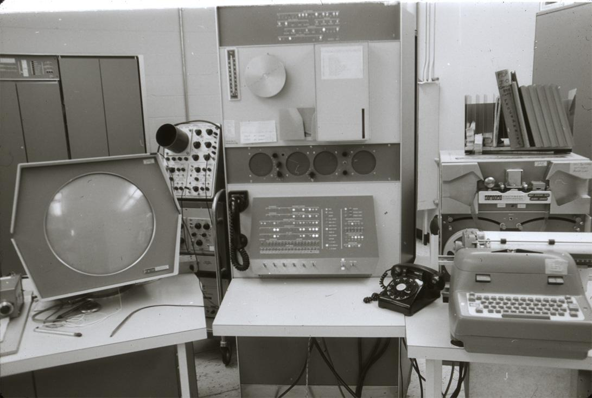
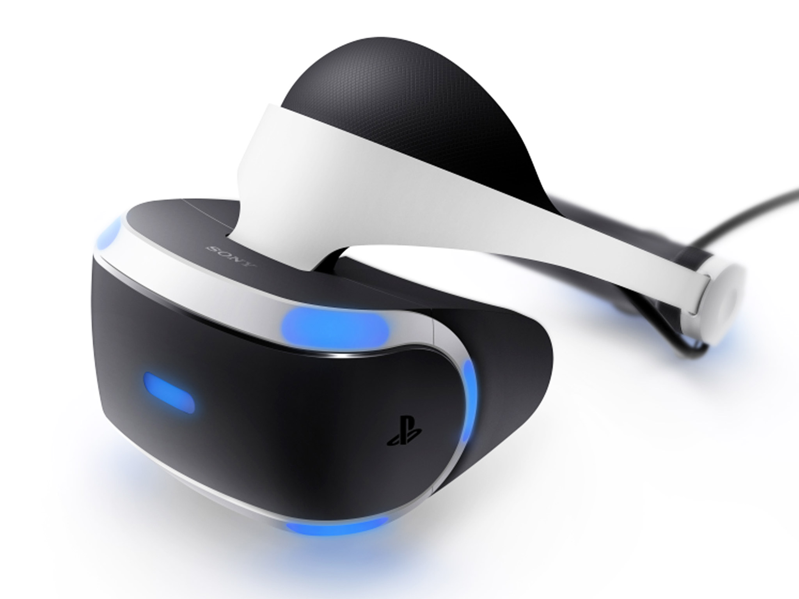

The Beginning
When it comes to the history of computing, computer gaming holds a large stake in the advancements of the technology.
While there were computer simulations and presentations created earlier, it can be said that it all started in
1955. The idea conceived by Ken Olsen and
Wes Clark, two men who worked in the Lincoln Laboratory at the Massachusetts Institute of Technology (MIT).
Their idea was to alter the concept of the Whirlwind computer - designed by Jay Forrester, to process commands
in real time, and use a faster, more reliable form of Random Access Memory (RAM). They planned to implement the
newly invented transistor, and the prototype was called the TX-0.Their alteration allowed for computers to be
smaller and cost less to manufacture.
New Technology Breeds New Innovations
It was in this new generation of computers that the PDP-1 minicomputer was created, and along with it, the first
space combat video game. Spacewar! was created in 1962 and is one of the first games in early video game history
- it even featured a very early model gamepad to make controlling the game less awkward than it would be if
using the switches on the PDP-1.

However, because these computers were still meant for educational and businesspurposes it was not common for them
to have games programmed or installed during manufacturing. Games were seenas something that would threaten
productivity or hinder learning experiences, so oftentimes the games wereprogrammed or installed post-production
on one in every few units.
Early Generation Home Consoles
As the generations went by and computers progressively shrunk in size and grew in functionality, the next step in
enginuity was to bring the gaming possibilities to the homes of everyday people, although gaming on an actual
computer would continue to flourish on its own In 1972, Magnavox released thefirst home console it was named
the Magnavox Odyssey, played in monochrome (black and white), and was pre-packaged with multiple props to
accompany the games.
While Magnavox sold 100 thousand units in the first year, they were quickly overshadowed
by other consoles, the most notable first generation console being the Atari, especially with its inclusion of
the table tennis game Pong. Through the generations, consoles and companies developed, and eventually the gaming
scene would come to be lead by three major companies. These titans would be Microsoft, with their Xbox console;
Sony - with their Playstation 1; and Nintendo - with their Wii model. Though as standards continued to
change and grow through the years, Nintendo would eventually come to be subpar in comparison to their formidable rivals.
Looking Towards the Future
With these ever-growing standards, incredible innovation in technology have been steadily increasing as well.
While the Xbox and Playstation console families are still the home standard, and a desktop computer is still the
competitive musthave, there have recently been major advances towards the future of experimental gaming methods.

The most notable experimental method is virtual reality gaming (VR), with almost every game developing company
designing their own model of VR headset. Amongst the multitude of designs, the HTC Vive stands out as the best,
followed by the Oculus Rift, as well as Sony’s Playstation VR Headset which is set to release later this year.
While the previous list is comprised of headsets specifically designed for gaming, there are also headsets
designed to accompany phones. The major projects in this category include the Samsung Gear VR, and the Google
Cardboard - a biodegradable headset that is actually made of cardboard.